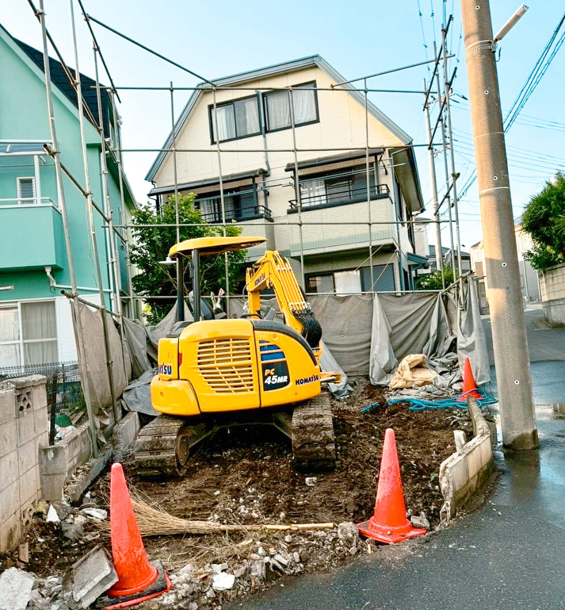

MESSAGE
「ただの解体」ではなく、
「ただの解体」ではなく、
未来の風景を築く仕事を。
私たちの仕事は、そこに住まう人々の生活と、これから生まれる新たな風景を守ること。お客様と真摯に向き合い、迅速かつ丁寧に作業を進める。その姿勢を、現場で一緒に体現してくれる仲間を探しています。
WHY BUDDICLE
バディクルで働くということ
未経験からでも、
着実に成長できる
解体工事の経験がなくても大丈夫。先輩スタッフが現場で丁寧に指導しながら、一つひとつの工程を任せていきます。
木・鉄・RC
木造・鉄骨造・RC造まで、幅広い現場を経験できる環境です。
チームで進める現場
一人に任せきりにせず、チームで声をかけ合いながら安全に作業を進めます。
地域に根ざした仕事
千葉県船橋市を拠点に、千葉・東京・埼玉エリアの現場を担当。地元密着で長く働ける環境です。
8-19
受付時間は8:00〜19:00。規則正しい現場運営を心がけています。
FLOW
応募の流れ
01
お問い合わせ
お電話・フォームからご応募ください。
02
面談
お仕事内容や条件について詳しくご説明します。
03
現場見学
実際の現場を見学いただくことも可能です。
04
入社
先輩スタッフのサポートのもと現場デビュー。
FAQ
よくある質問
未経験でも本当に大丈夫ですか？
はい、大歓迎です。先輩スタッフが現場で丁寧に指導しますので、解体工事の経験がない方も安心してご応募ください。
体力に自信がなくても働けますか？
まずは面談で希望や適性についてお話をうかがいます。担当できる作業内容についても、面談時にご相談ください。
勤務地はどのあたりになりますか？
千葉県船橋市を拠点に、千葉・東京・埼玉エリアの現場を担当しています。詳しい勤務エリアは面談時にご案内します。
応募後、どのくらいで連絡がありますか？
高いレスポンス力を大切にしており、お問い合わせには迅速に対応いたします。まずはお気軽にご連絡ください。